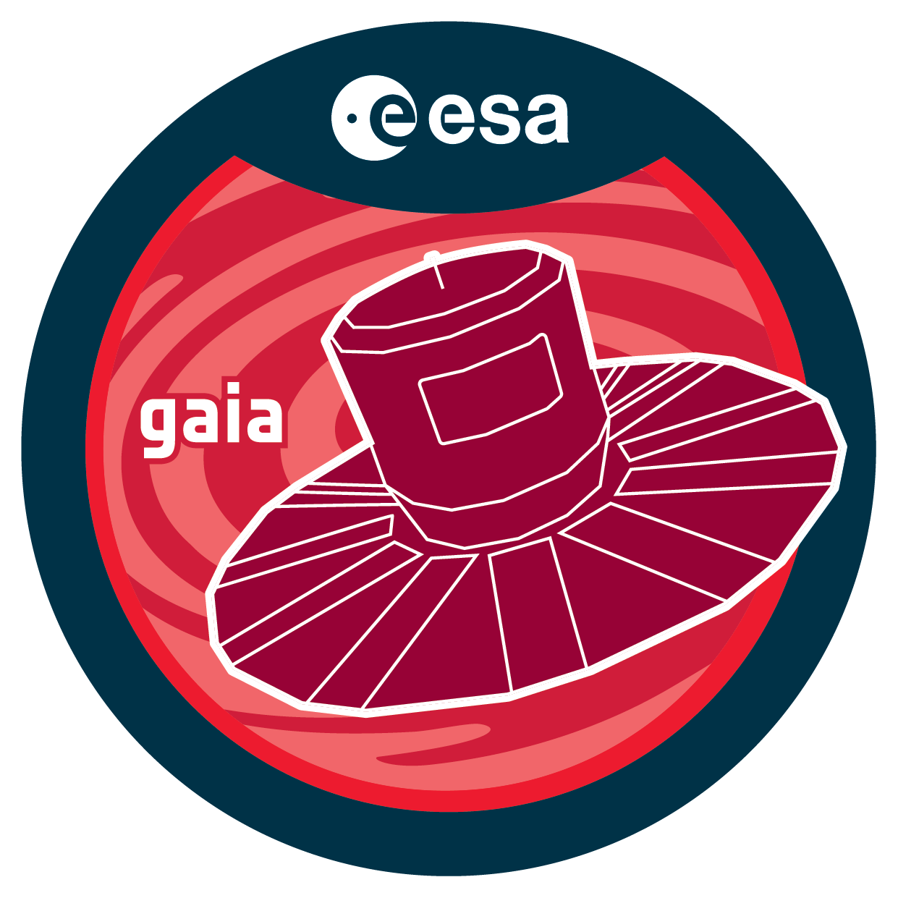

{kind=link}

Output parameters
This is a descriptive summary of the output parameters of supdate method.
When supdate is executed without the arguments model and compute_excess_noise, the default behaviour computes the astrometric parameters as in DR4, which uses Heaviside’s weights and is not recomputing the excess source noise of the observations.
model
Model used to compute the astrometric solution.
Default: ‘6p_constrained_colour’
Type: string
solver
Solver used to compute the astrometric solution.
Default: ‘agis’
Type: string
parameters
Array of the computed astrometric parameters in the following order:
offset in right ascension [marcsec]
offset in declination [marcsec]
parallax [mas]
proper motion in right ascension direction [mas yr−1]
proper motion in declination direction [mas yr−1]
pseudocolour difference defined as: gaiasupdate_pseudocolour = ( archive_pseudocolour - archive_nu_eff_used_in_astrometry ) * 1e-3 [µm−1]
Type: narray
residuals
Difference between the observed and the predicted values.
Type: narray
index_keep
Indices of the measurements that are not outliers.
Type: narray
timestamps_of_used_observations
Dataframe containing columns of the used observations times: obsTimeTcb and relative_time_year.
Type: dataframe
weights
Numerical coefficients assigned to the observations to reflect their influence in the final result.
Type: narray
n_data_total
Number of total observations.
Type: int
n_measurements
Number of accepted observations.
Type: int
parameter_covariance_matrix_formal_inverse
The inverse of the covariance matrix of the estimated parameters’ formal errors.
Type: narray
parameter_covariance_matrix_formal
The covariance matrix of the estimated parameters formal errors.
Type: narray
parameters_formal_uncertainty
Array of formal uncertainties of the astrometric parameters in the same order as the parameters array.
Type: narray
n_parameters
Number of astrometric parameters to be solved.
Default: 6
Type: int
excess_noise
Excess noise of the source [marcsec].
Type: double
n_outliers
Number of outlier observations.
Type: int
significance
Significance of excess noise of the source.
Type: double
total_variance
Total variance.
Type: narray
measurement_variance
Variance of the observation.
Type: narray
parameter_covariance_matrix_normalised
Normalised covariance matrix of the parameters.
Type: narray
parameters_normalised_uncertainty
Normalised covariance matrix of the parameters’ formal errors.
Type: narray
solution_statistic
Contains statistical parameters such as:
n_parameters, n_measurements, residuals, total_variance, measurement_variance, model,
solver, excess_noise, n_outliers, n_degrees_of_freedom, chi2, chi2_total, ln_likelihood,
bic, aic, f2, f2_total, residuals_rms, residuals_mean.
Use the dot (.) operator or getattr to access this object properties or call its functions.
Type: object